How to Set Up and Use Remote Calibration¶
Overview¶
The remote calibration feature enables you to perform channel calibrations from a remote PC using the iTest Calibrate utility. This feature can be useful for performing calibrations at measurement locations, such as a test cell, from a remote PC.
The purpose of this document is to provide instructions for setting up connection with a remote PC in order to share calibration data. For more information on calibrating channels, refer to the Calibration Utility documentation.
|
 |
NOTE: |
An iTest license is required to use this feature on the remote PC. |
Remote Calibration
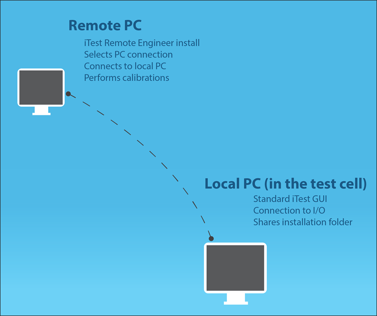
Sharing the Folder¶
To allow connection from a remote PC, you need to share the local iTest installation folder on your network. Depending on your company's IT restrictions, you may only be able to share this folder with a specific user; otherwise, you can share with everyone on the network. To share the folder so it can be used remotely, do the following:
- Go to your $SYSTEMDIR.
- Right-click the name of the folder and select Properties.
Folder Properties
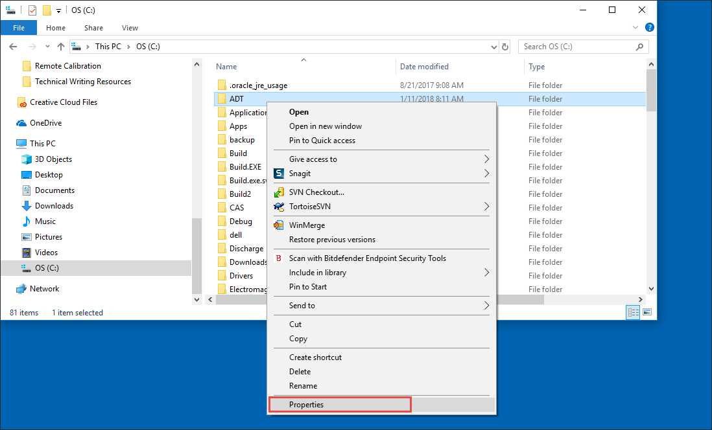
- On the ADT Properties dialog, select the Sharing tab.
Sharing Tab
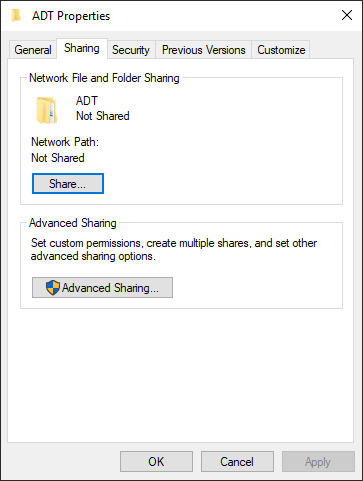
- Click the Share button. This opens the Network access dialog.
- Select the drop-down next to the Add button. Choose to share your folder with everyone or find specific people.
Share Folder
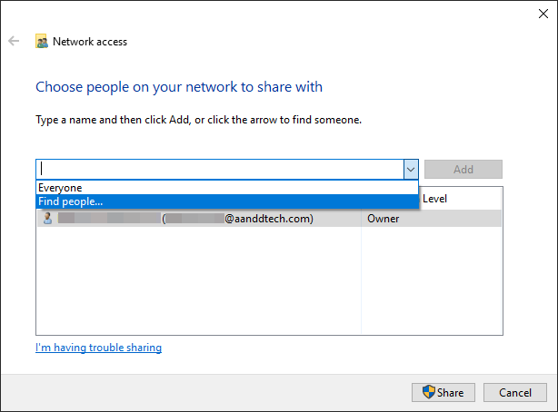
- If sharing with everyone, select Everyone, and then click the Add button.
Share with Everyone
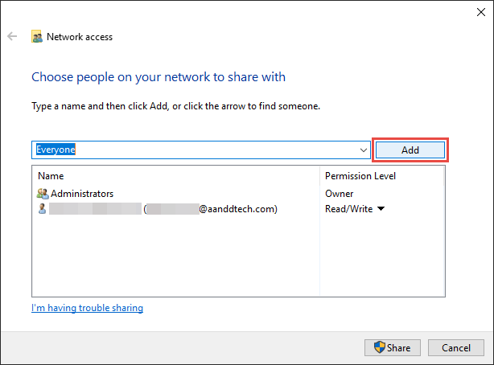
- If sharing with specific people, select Find people.... In the Select Users or Groups dialog, enter the names of the users or groups in the Enter the object names to select field.
Users or Groups
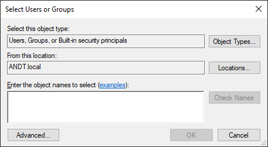
- Click Check Names to verify the names of the users or group.
- Click OK.
- Modify the permission level, so that the user/group has read and write capabilities.
Permission Level
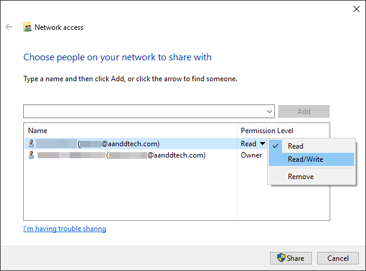
- Click Share. Sharing your folder may take several minutes to complete. When it is finished, a dialog displays, indicating that the folder is shared.
Sharing Finished
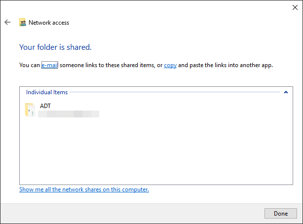
- Click Done when it's finished.
Connecting Remotely¶
Once you have properly shared the iTest folder, you can connect remotely to the PC in the test cell. On the remote PC, do the following:
- Go to $EXECUTEDIR.
- Double-click Calibrate.exe to launch the utility.
Calibration Utility
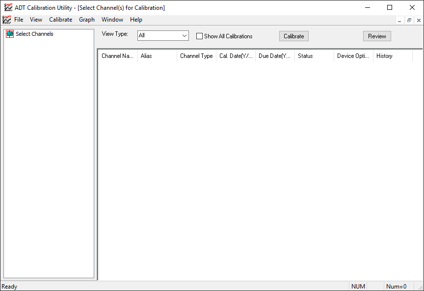
- Select Calibrate > Select PC Connection from the top menu.
Select PC Connection

- In the Select a Network Connection dialog, click the Browse button to search for the config.ini file on the remote PC. This will auto-fill the test cell PC name and the shared iTest directory. Alternatively, manually enter the test cell PC name and the shared iTest directory.
Select Network Connection
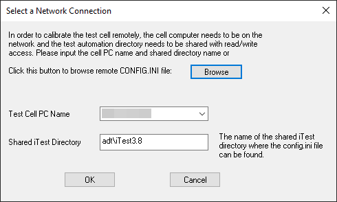
- Click OK. The list of channels that can be calibrated displays in the utility as if it was running locally.
Channels
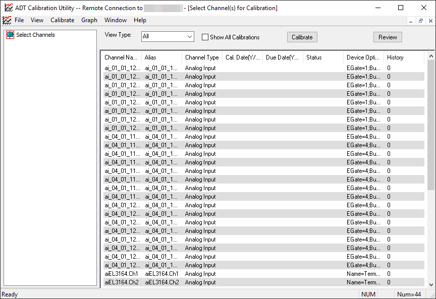
- Perform calibrations as normal.